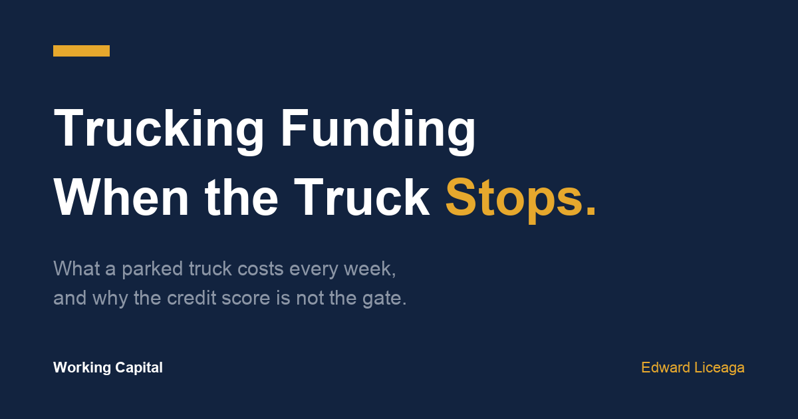

Trucking Business Funding With Bad Credit: What a Parked Truck Costs Every Week
The score is not what stops the file. The parked truck is what makes the delay expensive.

A truck that is not moving is not neutral. It is a subtraction problem that runs every week whether or not anyone is looking at it.
That is the part most funding conversations skip. Owners ask what an advance costs. Almost nobody prices what the wait costs. In trucking the wait has a number, and it is usually larger than the owners assume.
I work a funding desk at Creative Capital Solutions. Trucking files come across it constantly, and they fail for reasons that have very little to do with the credit score everyone is worried about.
The math of a parked truck
Here is an illustrative example. These are not a client's numbers and they are not a quote. Run your own.
Say a truck grosses $8,000 a week. Operating costs, fuel, insurance, driver, run 65% of that. The truck contributes roughly $2,800 a week toward the business.
Now the engine goes. The rebuild is a mid five figure job and the shop wants payment before it starts.
If capital shows up next week, you lose one week of contribution. Call it $2,800. If the bank runs its process and you are looking at six to eight weeks, you lose $16,800 to $22,400. The repair cost did not change. The delay did.
That gap is the actual decision. Not the factor rate in isolation, but the factor rate measured against what the weeks cost.
Two things make it worse than the arithmetic suggests. A driver sitting idle finds another seat, and replacing a driver is its own expense. Freight relationships route around you. A broker who could not get a truck from you twice usually finds someone who answers.
Why banks move slowly on trucking specifically
It is not personal and it is not always the credit score.
Trucking is asset heavy, revenue is variable, and fuel is a commodity input the owner does not control. Bank credit boxes are built to reward predictable, and a business with three good months and one bad month reads as unpredictable even when the annual number is strong.
Equipment already carries liens. Equipment lenders take the collateral, which means a bank looking at working capital sees an asset that is already spoken for and prices accordingly.
And banks underwrite the file, not the clock. Nobody in that process is measuring the $2,800 a week. That number only exists on your side of the desk.
What bad credit actually does to a trucking file
Less than you would expect.
A personal credit score is a tiebreaker in this kind of underwriting, not the gate. What gets read first is three months of business bank statements. I wrote the full version of that in what underwriters actually look for in bank statements, and the same five numbers apply here with trucking specific wrinkles.
Deposit consistency. Settlement deposits arriving on a rhythm read as a business. Long gaps followed by one large settlement read as a question, even when the total is identical.
Average daily balance. In trucking this is where the fuel cycle shows up. If the account runs to near zero every week before the next settlement lands, that is visible, and it sizes the offer down.
Negative days. Fuel and insurance debits clipping the account below zero on a schedule is the single most common reason a workable trucking file turns into a small offer or a no. It is also the most fixable thing on the list.
Existing positions. Regular fixed debits that do not look like fuel, insurance, or payroll read as an existing advance. Disclosed is normal. Undisclosed and visible in the statements is the problem, because it costs you credibility on every other line of the file.
Deposit concentration. This one hits trucking harder than most industries. If 80% of your volume comes from one broker, your business carries that broker's risk. Losing them is a cliff, not a slope. Volume spread across several payers usually reads stronger than the same dollars from one.
None of those five is your credit score. That is the actual answer to whether trucking business funding with bad credit is possible: the score is not what the file turns on.
Factoring and an advance are not the same tool
Owners often treat these as competing options. They solve different problems and plenty of carriers run both.
Factoring converts an invoice you already earned into cash now. It is tied to a specific receivable and it fixes the gap between delivering the load and getting paid on net 30 or net 45 terms.
A merchant cash advance is the purchase of a portion of future receivables. It is not a loan. It is not tied to one invoice, which is why it can fund something no invoice exists for yet: the rebuild, the down payment on a replacement unit, the DOT compliance item that has to clear before the truck moves at all.
If the problem is that your money is already earned but stuck, factoring is usually the cheaper fix. If the problem is that the truck cannot move until something gets paid for, an advance is the tool that matches the shape of it.
What to have ready before you ask
Three months of business bank statements. A one page application. If the capital is for a specific repair or purchase, the quote or the invoice.
That is it. No tax returns, no business plan, no collateral appraisal. On approved files, funding can move as fast as 24 hours, though timelines vary by file and nothing is decided before an underwriter reads the statements.
The owners who get the best outcomes look at their own three months first, in a quiet week, and see the two problems before anyone else does. Usually it is negative days and one broker carrying too much of the volume. Both of those are fixable in a 90 day window if you start before you need the money.
The last thing
Price the delay before you price the capital. Write down what one week of that truck sitting actually costs you, then compare it to the cost of the advance. Sometimes the answer is that waiting is cheaper and you should wait. Sometimes it is obvious in the other direction and the only expensive choice is doing nothing for six weeks.
Either way you made the call with the number in front of you, which is more than most people do.
If you want to see what your deposits may support, the application is one page and three months of statements: ccapsolution.com/apply.
May qualify, subject to approval. Amounts, terms, and timelines vary by file. A merchant cash advance is the purchase of future receivables, not a loan. I am an independent funding partner and earn on funded referrals.